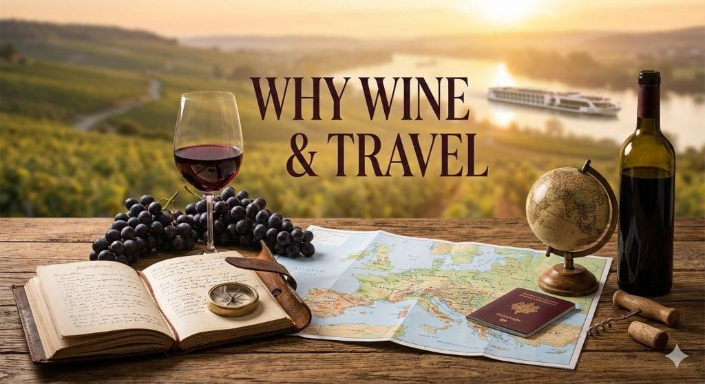
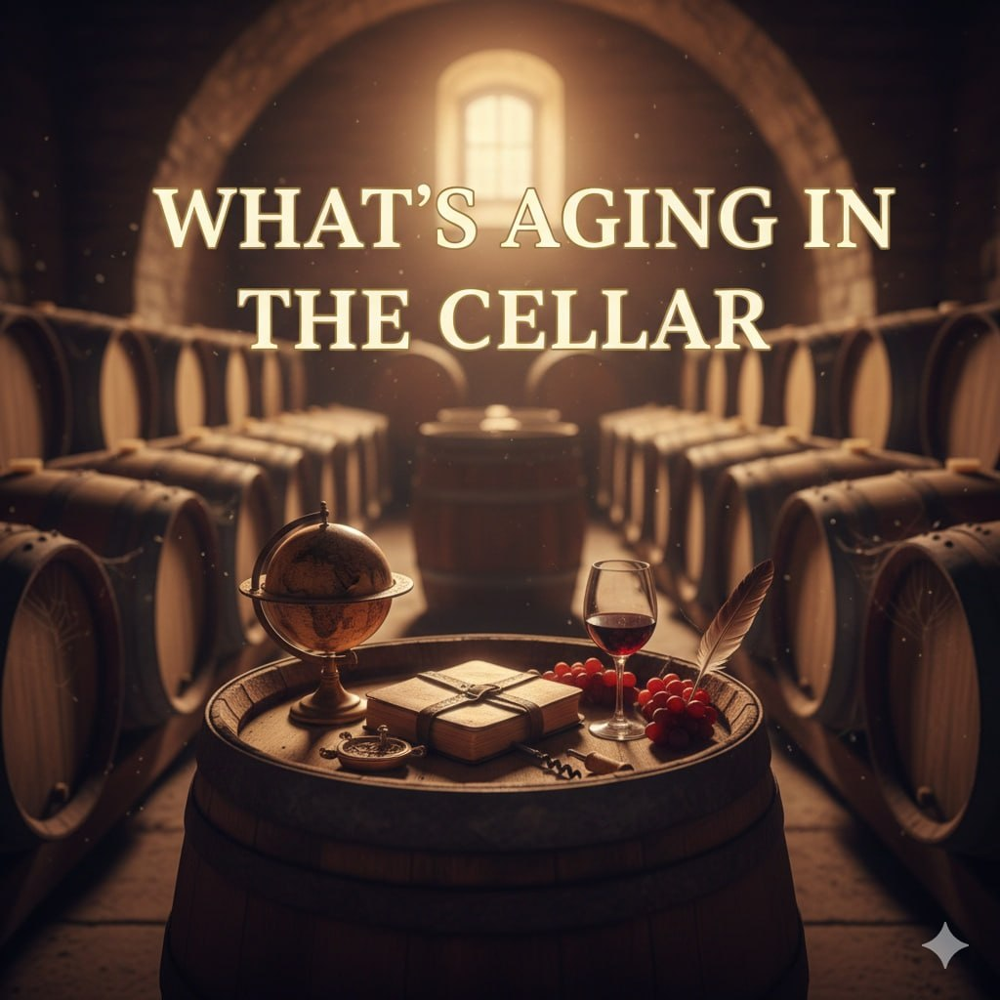
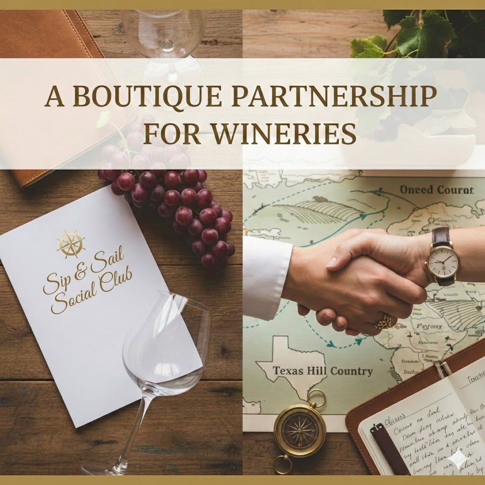
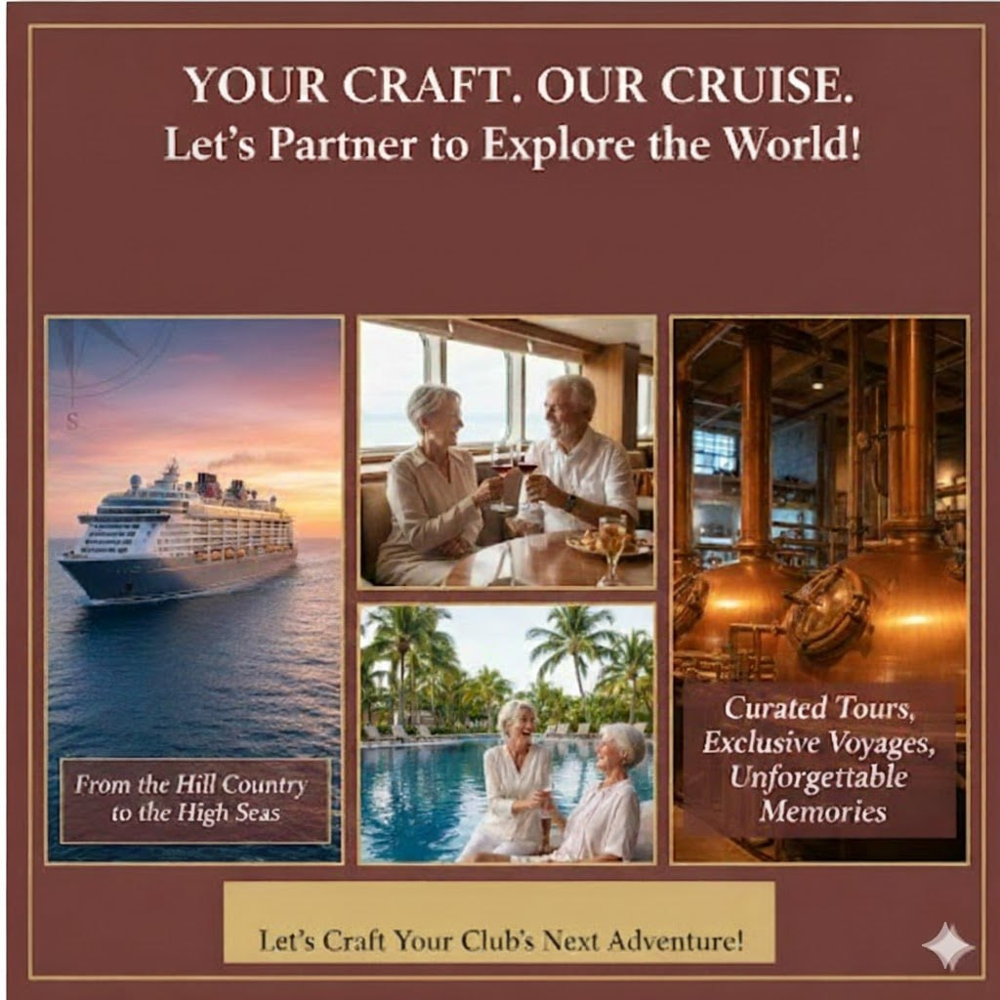

The Texas Hill Country is more than just a destination; it is a lifestyle and my home. Here, we appreciate the patience of a good vintage, the beauty of a rolling vineyard, and the community that gathers around a tasting table.
At the Sip & Sail Social Club, we have been inspired by the incredible wine culture right here in our backyard. I am thrilled to announce that I have partnered with Karen Musgrave to launch a new initiative specifically for our local wineries and their dedicated club members.
Why Wine & Travel?

For a wine club member, the experience does not end when the bottle is corked. It is about the story, the terroir, and the journey. Karen and I believe that the same passion that leads you to a Hill Country tasting room should lead you to the most iconic wine regions on the planet.
Through our new Strategic Stewardship, we are bridging the gap between Texas vines and the world's most legendary ports.
What Is Aging in the Cellar?

We are designing travel opportunities that offer more than just a standard vacation. We are creating "crossover" experiences where your favorite Texas brand meets the world:
- River Cruises Through the Roots of Viticulture: Imagine a luxury cruise down the Douro in Portugal or the Rhône in France, with private tastings led by your favorite local winemaker.
- The "Vines to Sea" Series: Exclusive balcony staterooms on the newest luxury ships, featuring Signature Texas wine pairings during sea days.
- Signature Harvest Tours: Small-group land journeys to Italy or Spain, focusing on the family-owned traditions that mirror our own Hill Country spirit.
An Elite Partnership for Wineries

For our winery partners, this program is designed to be effortless. The Sip & Sail Social Club manages the complex orchestration of every detail, from flights and transfers to cabin selections and fine-print logistics, so you can focus on the connection with your members.
It is a way for wineries to offer their "Inner Circle" or "Case Club" members a once-in-a-lifetime perk that strengthens brand loyalty while expanding their reach into the global luxury travel market.
Ready to Sip and Sail?

If you are a member of a wine club in Fredericksburg, Wimberley, or anywhere in the Hill Country, Karen and I want to hear from you! Which winery would you love to travel with?
And if you are a winery owner or manager ready to offer your members the world, let us talk about how we can design a journey that is as exceptional as your latest reserve.
We would love to brainstorm what a Signature Travel Program could look like for your brand. Reach out, and let us find a time to chat!
Diane Mack
Karen Musgrave
Sip & Sail Social Club